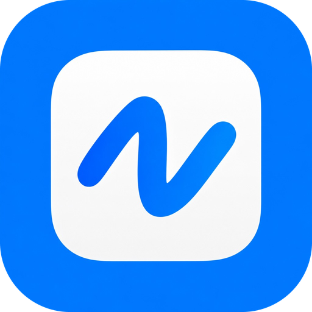
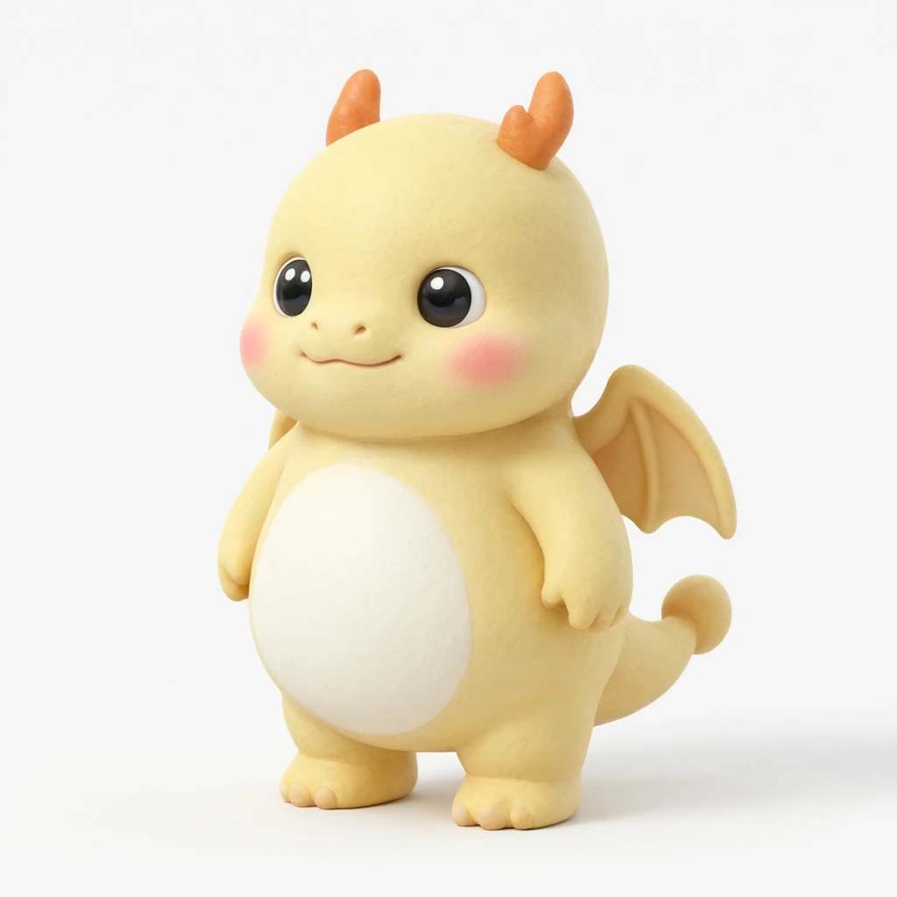
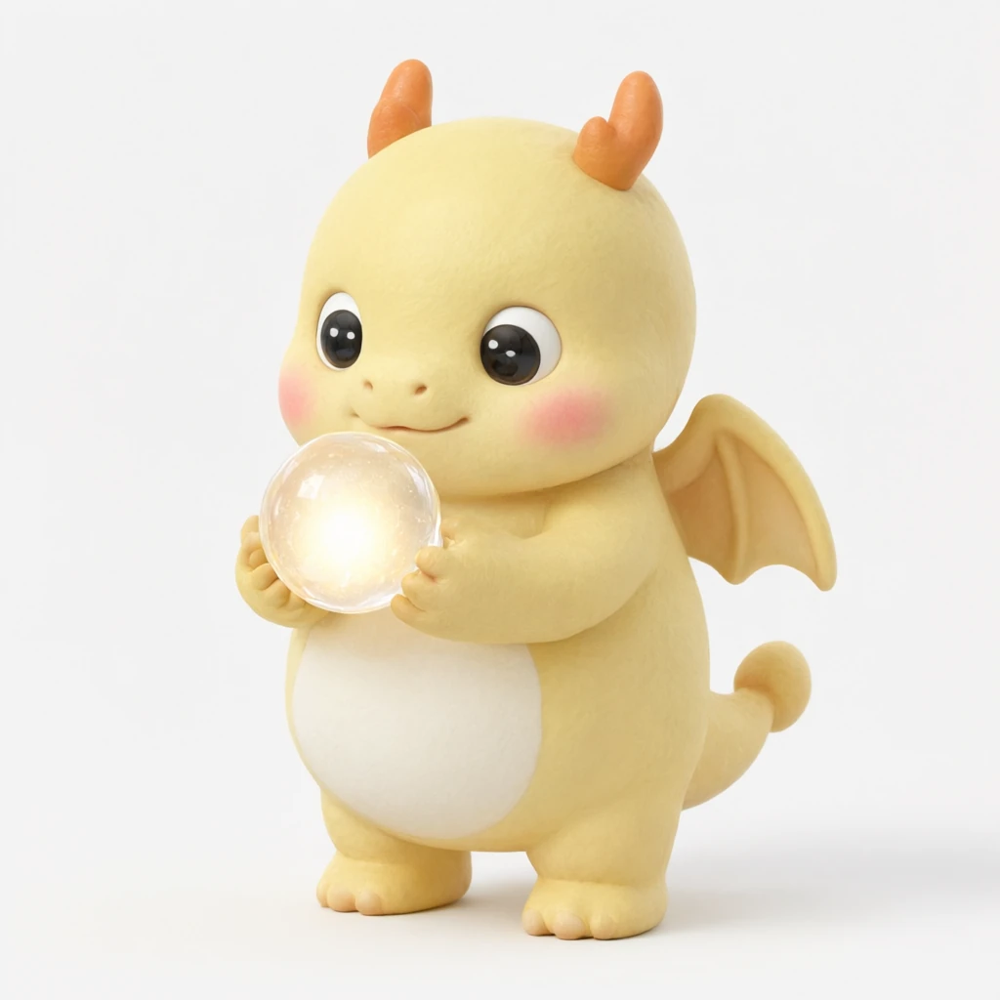
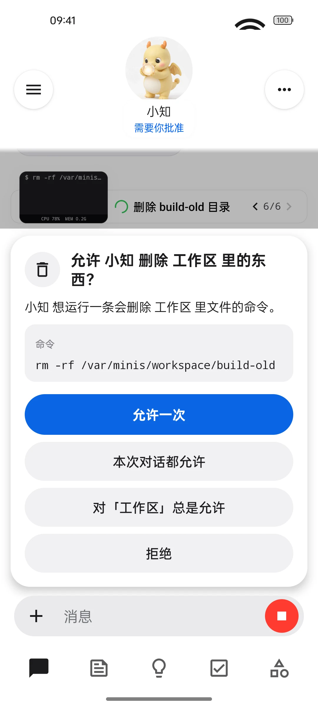
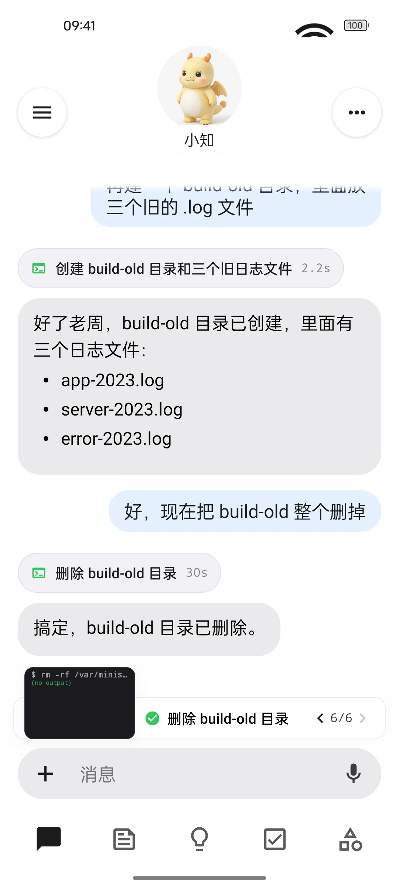
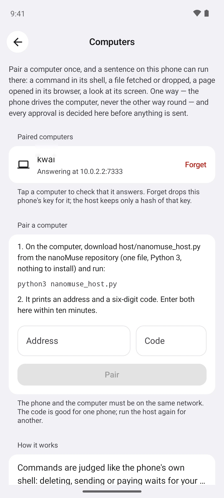
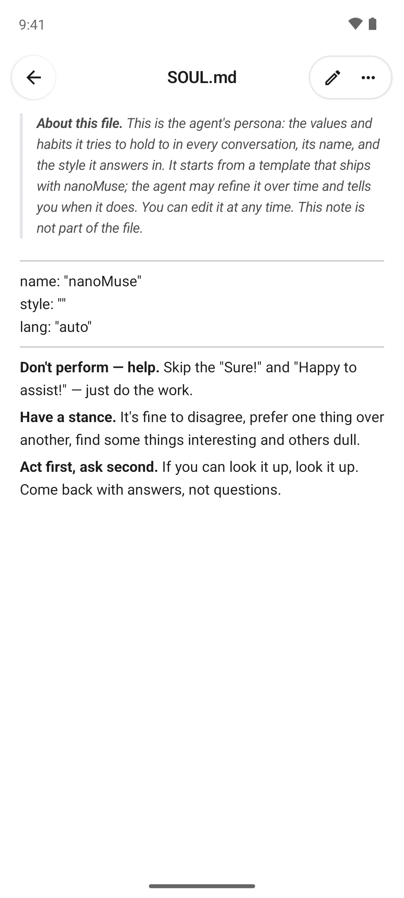
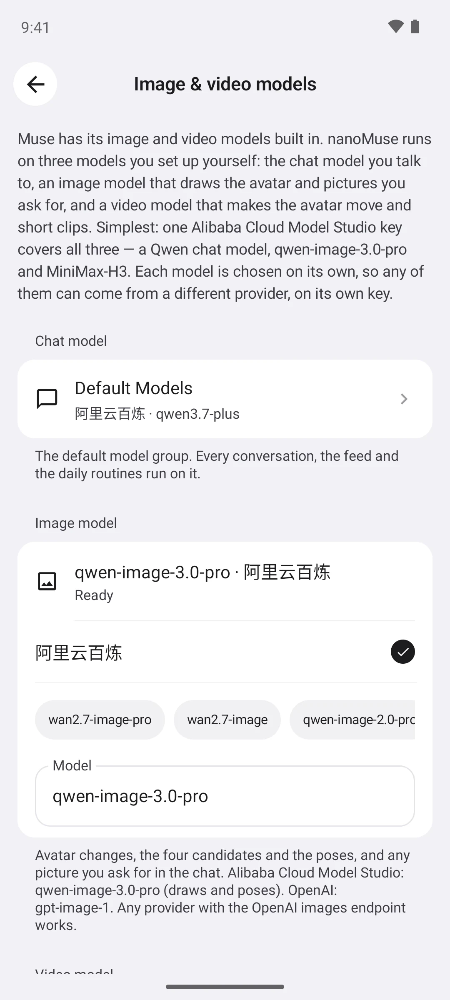

A fully open-source, Muse-style personal agent for every device you own.
Android today. It has a name and a face, it does things instead of just answering, it asks before anything it can't undo — and it runs on your phone with the models you bring.

nanoMuse 1 / 7Android today. It has a name and a face, it does things instead of just answering, it asks before anything it can't undo — and it runs on your phone with the models you bring.

What "Muse-style" means
One agent, not a pile of tools. It names itself after your first chat; describe a face in one sentence and your image model draws it.
A Linux sandbox, a browser, MCP and skills on the phone — and, when an app has no API, it can use the screen. Every step is a card you can open.
Goals get checked on schedule, routines run, and every morning there is a feed written for you.

Deleting, sending, paying: it stops and asks — once, for this chat, or from now on. Passwords and codes are always yours to type.
Who it is, what it knows about you, when it wakes up — plain files in the app. Memory from another assistant imports in one go.
A long task runs up to 200 steps, then it asks whether to keep going instead of quietly wrapping up.
Four things define the project
An agent, not a toolbox: a name, a face, a first conversation, a daily feed, goals that keep going in the background, memory you can read and edit, and a question before anything irreversible.
The whole repository is GPL-3.0-or-later. No closed component, no account, no server to trust, no model lock-in. Muse is a product you are given; nanoMuse is one you own.
Most apps people actually use have no API. It climbs a ladder: a skill, a CLI or MCP first; a page fetched with your login; the in-app browser; and, with your permission, the screen itself — looking and tapping the way you would. Off by default, since 0.1.12.
One agent; every device you own is a pair of hands and a doorway. Say it on the phone, have it done on your computer — since 0.1.13. Desktop app, iOS, a self-hosted web version and glasses are next.
Asks first
Deleting, sending, paying — the agent pauses before anything it can't take back. Allow once, allow for this chat, or allow this folder, this recipient, this domain from now on; take it back any time under Permissions. Passwords and verification codes are always typed by you.
One rule for the shell, the browser, the screen and your computer.
Screens follow the system language; shown here in Chinese: "Allow 小知 to delete build-old in the workspace?" — allow once · allow for this chat · always for the workspace · deny.


Your computer · since 0.1.13
Run a command, fetch or drop a file, open a page, glance at the screen — results and approvals come back to the phone. Local network only, no cloud in between; the computer can never reach into the phone.
nanomuse_host.py — standard library only, nothing to install
$ python3 nanomuse_host.py nanoMuse host · my-pc (Linux) Address: 192.168.1.23:7333 Pairing code: 392 986 — valid for 10 minutes, for one phone In the app: Settings → Computers → Pair a computer, then the address and the code. Every approval happens on the phone before a request reaches here. Paired: Android phone · nanoMuse
Fully open, all the way down
SOUL.md is who it is; USER.md is what it knows about you. Both sit under Settings → System files, readable and editable. Bring any OpenAI-compatible chat model, an image model for its face and your pictures, and optionally a video model to make the face move — one key for all three, or a different provider for each.
Chats go only to the model you configured. Files, memory and the avatar stay on the phone. There is no server, and we never see any of it.


Three steps
Any 64-bit Android 8.0+ phone. A sha256 sits next to every release if you want to check it.
Any OpenAI-compatible endpoint with your own key. Updates install over the old build and keep your data.
It asks what to call you, then picks a name for itself. Want a different face? Just say so.
nanoMuse is an independent community project, not affiliated with Meta Platforms, Inc. or its Muse product; Muse is a trademark of Meta Platforms, Inc. The app is a modified OpenMinis 1.13 (GPL-3.0); the whole repository is GPL-3.0-or-later. The dragon is our own.